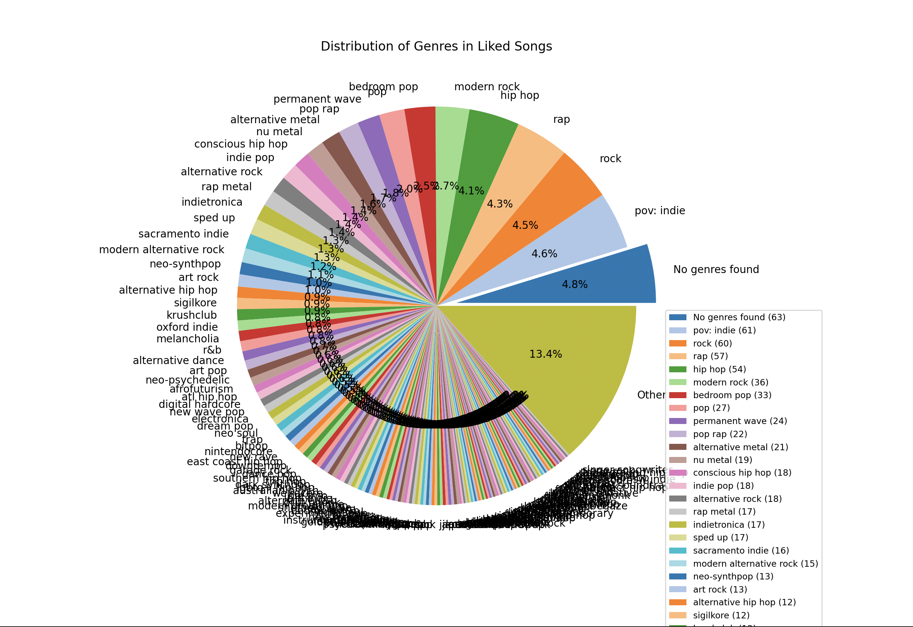
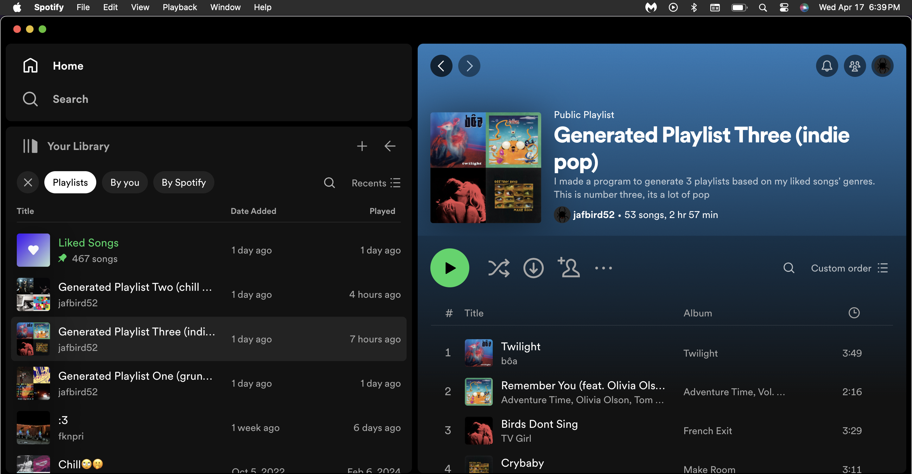
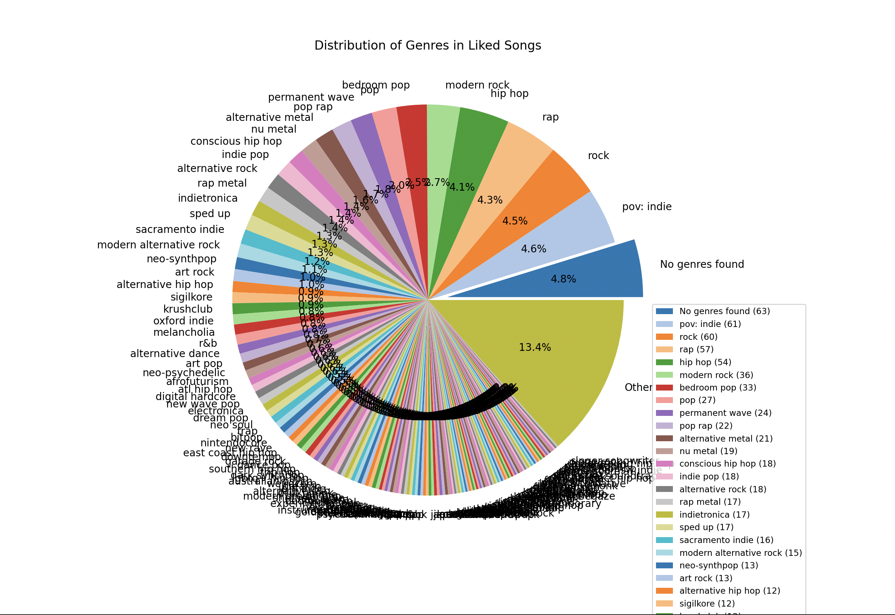
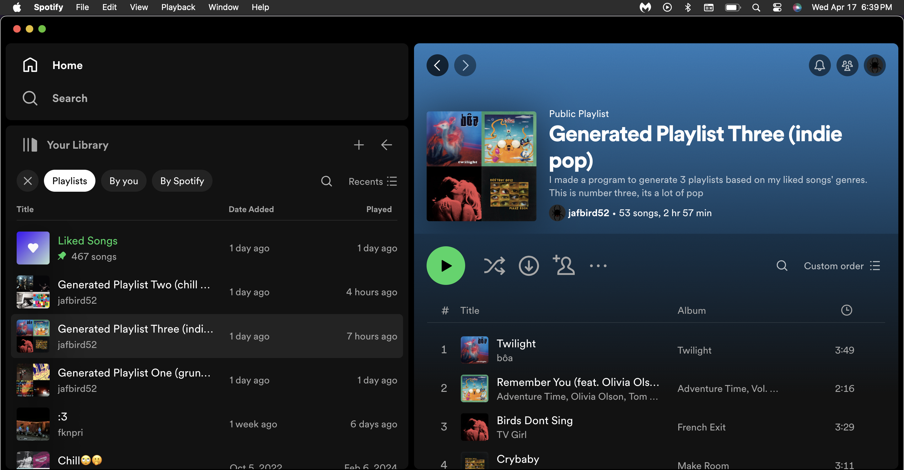
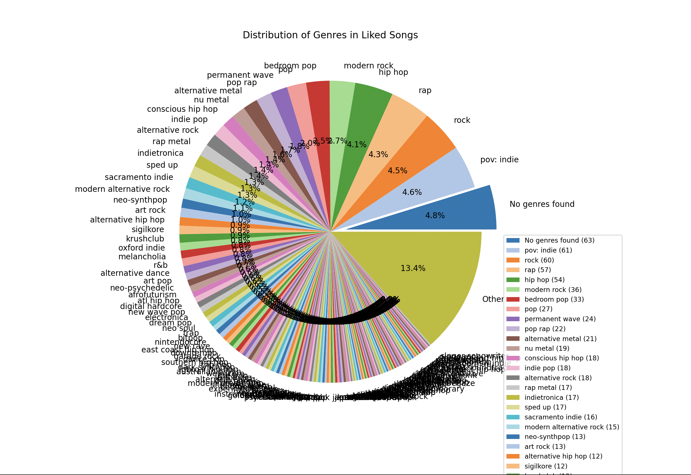
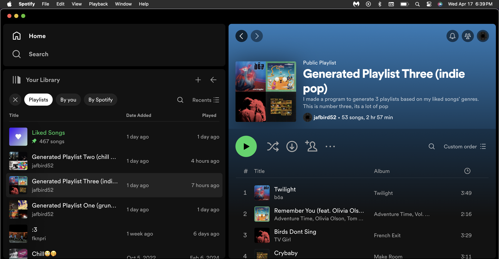

Description:
There are so little commits in this repository because most of the development of this program was in the span of 3 days.
I simply did not take breaks because I was having such a good time making this. This project was made after I learned how
to properly scrape the internet for information. The job search these days is really rough, especially for students who graduated
and don't have any experience under their belt. The job search has made it almost even more demoralizing when you realize it's just
you sitting there and matching your resume to other possible jobs. All the sourcing and sitting and analyzing made me realize how much of a
time dump it was for me. With experience, I was able to get from my last web scraping project, I learned that the webdriver from
Selenium was much more powerful than I realized. Using the automation environment from Selenium, I leveraged Python to scrape one job board in specific:
Glassdoor. Glassdoor specifically because most job boards are very strict about your scraping their data (After all its easy to scrape data that has
already been sourced). Either way, Glassdoor was a perfect fit because although there 100% were sensitive rate limits, I was able to backdoor it by
meticulously carving the crawl model over time to not raise any flags.
Anyway, I knew I was going to make this model tailored to myself. The initial goal of the project is to get a list of relevant jobs matched from various endpoints/means
that I can look at the click of the button. To do this, I needed a list of concatenated search listings. When I apply, I am so quick and already know what I am applying for,
so I made a list of the relevant job titles and places. One section for remote, one section for specific cities I would be okay moving to, one for anywhere because I like the listing.
Either way, those are the two parameters of however many searches you want to do. So, here's the other kicker. Glassdoors search option to expand the listings made my each user
does NOT contribute to their per-minute count of rate/request limiting. So, if you click the "show more jobs" button indefinitely, it'll show all 50-3000 jobs. Put a little try/catch in there
if there isn't any job and that ONE search is going to grab all 3000 jobs.
Now I have a MongoDB collection of x jobs. The crawler originally stored all the links to each listing's full description, naturally, so we use those links and use webdriver once more
to pull the entire listing descriptions and store it as a string ( other metadata too, like how long ago it was posted, etc). This is the most time intensive as request limiting proved
to be a huge pain. Each parsed element was around 4 seconds total.. and you can do the math if you have 4000 listings to go through. Hence, the program title of "Overnight Job Search".
My professor in college always told me that once you get data into a database, you can do whatever you want with it. So, my idea ORIGINALLY after retrieving the information I want is finally
coming into play. I then preprocessed each job listing by lemmatization and tokenization. Both the user's resume skills and job listing's tokens are thrown into a tf-idf vectorizer where we
use cosine similarity to compare the likeness of each listing to your speciifc skill set. Because cosine similarity returns likeness in a scale of -1 to 1, we know that a job listing returned
back to us is very good if 1 or not alike at all if -1 (Literally a vector pointing in the opposite direction). This score wasn't good enough for me though, I felt that it didn't fully encompass
the automated finding that I wanted. My solution was to take the top skills listed in each listing and cross-reference the skills likeness and the job description likeness. This value came out much better
and from there I was satisfied with the finalized model (I needed to start applying to jobs again).
Overall the idea of automating something that normally takes up 3-4 hours a day was very motivating for me. I really loved making this project and I know it made me a better programmer in the long run
regardless of my success in finding a career later.
1. Subreddit Web Crawler and Scraper w/ Neural Network Image Recognition
What was used: Python, MongoDB, Flask, BeautifulSoup, Selenium, Urllib, Reddit
Description:
Yes, there is a Reddit API that can get me this data easily, but I learned how to make web crawlers from a web search course in school. I was intrigued and wanted to see where I could
possibly pull data from. Fueled by this need just try it for myself, I quickly ran into the issue of domains. Everywhere my frontier went was restricted to open so nothing was getting collected.
I decided to search for a specific domain, perhaps to create a vertical search engine, and found myself on www.reddit.com. I am an avid user of reddit, and I think there are solid topics for any category
of discussion with lots of specific detail within subreddits. That helped me decide to crawl specifically for urls containing: "www.reddit.com/r/{subredditName}". After successfully multithreading
the crawling logic, I was able to get around 1.4k documents(subreddits) in the database in around 30 minutes. I understand if I spent more time on the crawl logic it's definitely possible to crawl a large portion
of subreddits in Reddit. For example, if I were to start the frontier from multiple points of Reddit instead of one corner. I essentially "bottlenecked" myself by cutting the crawl to only one corner.
Once the subreddits were saved, I have a subredditParser.py where I scrape or parse the subreddit pages. I initially used BeautifulSoup and Urllib to open the link and take data, but I ran into an issue
where the subreddit web page was dynamic and loaded content later than subredditParser.py scraped it. Meaning, the data collected was null, so I used Selenium to open an instance of the web page,
wait 4 seconds for the content to certainly load, then collect what we need with BeautifulSoup, and store it back into a new collection in MongoDB. After I successfully scraped each subreddit, I was kind
of at loss with what to do with all of this data. I had the subreddit name, the description of it, subscribers, current users, and random images. This is when the project gets less serious and I throw my weird twist on it
and I decided to search for "cat-like words" in each subreddit. I like cats, and I was genuinely curious which subreddits discussed or consisted of cat content more than others. So I came up with a list of cat words, tied weights
to each word (by my own personal belief of if that word relates more to a cat), counted the occurrences of list words in each subreddit, and gave each subreddit a calculated "Cat Document Score". This was with the intention
of creating a "Cat Subreddit Search Engine" with my own collected data, but if I'm being 100% honest I had created a cosine similarity based search engine in a class that same week, so I stopped here and just displayed
the data using Flask to a random website I made for fun. It runs locally, so I sometimes play it and leave it on my screen like a screensaver. I also added on an Neural Network Image Analyzer to each scraped image later on using
public datasets like CIFAR-10.
Description:
Over the course of October 2022 to even now, I'm putting updates into this game purely for the fun. It started as a little project of mine that got out of hand when in my CS4700 game
Development class I was tasked with creating a level of a game. Anything I could think of using Unity. So, I created the easiest version of a game I could think of which was Mario platforming.
It turned out to be pretty fun following the YouTube tutorials and I ended up adding more content of what I wanted to see. My imagination ran wild, and before I knew it a couple of months later I was
on the path to making a full-fledged game. There were countless iterations of art style, game progression, abilities, enemies, core gameplay, transitions, lighting, camera movement, etc. I found myself in
an awful programming loop where there was constant progression but no actual end in sight. Games really require a lot of attention in every aspect and corner or else they feel wrong. Immersion has to play
a part, feel has to play a part, sound, movement, combat, dialogue, it all took so long for me to finalize. I love this project so much because at the end of the day it's the best show of what I can do.
Sure, it's not perfect, but it was the learning process and the consistency of additions to this project that makes it so important to me. I ended up dropping it until I came across my undergraduate research:
Procedural Content Generation in Games (for player experience). The focus was on terrain generation algorithmically. I ended up making my own variation of the drunkard's walk, or random walk, using the Tilemap2D system
in Unity. It would create a grid of 100x100 tiles, and start the walker in the middle of the grid. It would randomly "walk" around the grid and each space it traversed would delete the tile it corresponded to.
Due to pure randomness, there was an issue with backtracking into null tile spaces and effectively never reaching the end goal, that being any one of the four edges of the large grid. To fix this, before the walk even started,
I created a random bias direction that upon 10 null tiles traversed in a row, the walker would move in the bias direction. This resulted in maps having direction and actually unique 2D caverns that it created.
In order to make the maps look proper I would iterate through all tiles present and check the 8 spaces surrounding each tile to know which type of tile piece should be placed. Soon, corners, edges, and blank tiles were
all in their respective locations. After adding in random enemy placement and start/end nodes, the PCG level was pretty much complete. I liked the idea of having the PCG levels staggered throughout the game, and the prebuilt original
levels incorporated in between. This is easily the most spent time on a project I have, but I am very happy with how it is today. Hopefully, I figure out quality sound implementation and have this game 100% complete at some point.
3. Spotify API (Playlist Maker with Genre Clustering, Extra Account Data)
Description:
This project was started after my fascination of my own data. I always liked Spotify wrapped, the service that Spotify provides yearly where they
show your top artists, top songs, any other relevant related "interesting" information. They always add something new every year, but I still felt
it wasn't enough. Top 5 songs and artists didn't cut the quota, so I decided to look into the Spotify API. I had been using tons of Python at the time
from some classes so I used Python with my authentication tokens and whatnot to create a spotify developer instance with my own Spotify account. From there
I explored other functions of the API like searching for artists. There's a file called "searchArtist.py" where it shows the name, popularity score, genre, and follower
count of a queried artist. After seeing the popularity score as something Spotify ties to each artist, I had an idea (a bad one). What if I used the popularity scores and removed
all artists with a popularity score over what I specified from my liked songs? The final options for this project are: 1. See up to 50 of an account's top artists. 2. See up to 50
of an account's top tracks/songs. 3. See an amount of an account's liked songs. 4. Find the average popularity score of an account's liked songs. Then, finally, 5.
Remove any songs from an account's liked songs with a popularity score over a specified number.
Updated as of April 16, 2024: I added in an automatic playlist maker! I liked that I could see all my genres, so in the second link I made another repo with a cloned version of
what I did in the previous project. I used matplotlib to display a pie chart which iterated through all of my liked songs and created a dataframe with pandas (basically just a
dictionary, but I had the intention of throwing this data into MongoDB if my friends decide to give me their info [I could cross-reference our differences in data]). I then take
the genres and created an inverted index that had {key: genre, value: songs tied to genre}. This helped me create a visualization of "Distribution of Genre in Liked Songs". At
this point, all I wanted to do was create a visualization, but then I had an idea. I had all the genres in an inverted index with each song associated. If I am able to plot
each genre on a scatter plot point, then I can run a clustering algorithm to "group" each similar genre together into playlists for myself. I ran into a quick issue, though, where
there are so many genres and some are similar names but aren't the same data. For example, "indie" music is different from "indie pop" despite both having "indie" in the name. Classic
data normalization issue, so I used the NLP library and toolkit in order to group those types of discrepancies together. Now, the program will look at "alternative rock" and "rock" as
the same genre. Maybe some users don't want this, but I personally have 466 liked songs currently, and this is my playlist maker so I did what I wanted. I got to use NLP as well, which
is cool. Then the clustering was ran using some more libraries, and I allowed the user to choose how many clusters (playlists) they want. Lastly, I had the clustering function return the
songs grouped together by genre as a list of strings (song names). I then had a function ran on each cluster made that uses the spotify API search option on each song and create a
playlist on the account tied to the activation token running the program. What resuled were three playlists for myself: Fast paced/exercise for one, rap/rnb/chill for two, and indie/pop
music for three. I am currently running this more for my friends and considering making it a web app if I have more time between finding a job! For now I'm just enjoying the pleasure of
personalized automation in my groupings of songs.


4. CPP Business Faculty Search Engine
What was used: Python, BeautifulSoup, MongoDB, Urllib
Quick Description:
This project was in my last semester at school. It was in the "Web Search and Recommendation Systems" course where we learned about
the process of information retreival. Served as group lead to create a faculty search engine on the www.cpp.edu domain name that utilizes
crawling, scraping, and vectorization with cosine similarity to provide accurate results for an arbitrary query. As lead ensured the
processes ran properly together. Created and used an inverted index with embedded tf-idf scores to vectorize the data for cosine similarity checking.
Then paginated the closest results to the query in groups of 5 links.


 


